Os instrumentos musicais são objetos construidos a partir de diversos materiais, com o objetivo de produzir som, música.
Existem diversas classificações de instrumentos musicais, algumas delas são:
Vamos falar um pouco sobre cada um desses tipos:
Os instrumentos de corda são aqueles que produzem som pelo toque em suas cordas, estas podem ser mais grossas (emitindo um som mais grave) e mais finas (emitindo um som mais agudo). A quantidade de cordas pode variar de acordo com o instrumento.
Os instrumentos de corda mais conhecidos são:
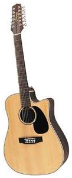 Violão 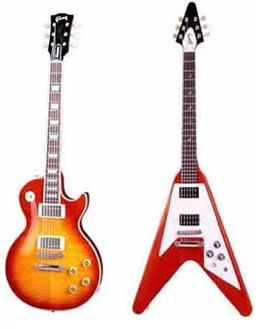 Guitarras 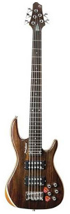 Contra-baixoOs instrumentos de sopro ou instrumentos de vento, geralmente tem estrutura em formato de tubo e são constituidos de madeira ou metal. O som é produzido pela passagem de ar pelo seu interior.
Os instrumentos de sopro mais populares são:
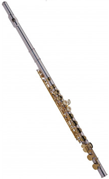 Flauta transversal 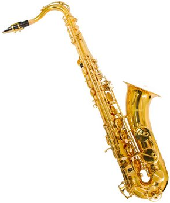 Gaita 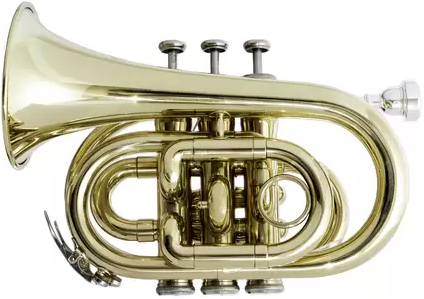 TrompeteOs instrumentos de percussão são aqueles que precisam ser batidos, ficcionados, raspados ou agitados, para que produzam som. A construção desses instrumentos podem ser simples ou complexas, e eles podem ter diversos formatos e tamanhos.
Alguns intrumentos de percussão:
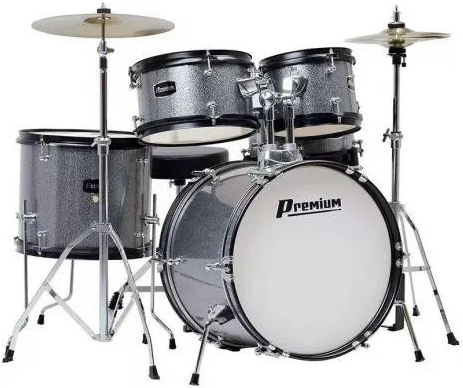 Bateria 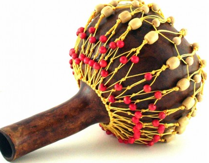 Chocalho 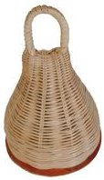 CaxixiOs instrumentos com teclas destacam-se por sua versalitidade sonora. Eles funcionam através do acionamento de teclas ou um conjunto delas emitindo uma nota.
Algus instrumentos com teclas:
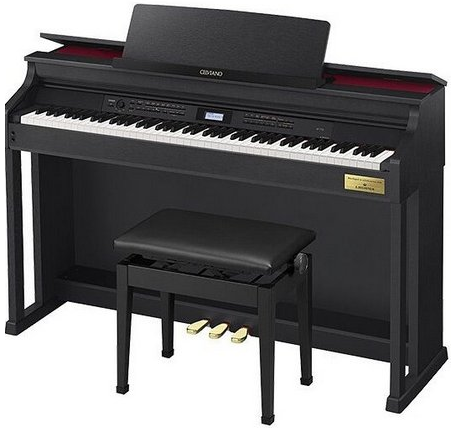 Piano 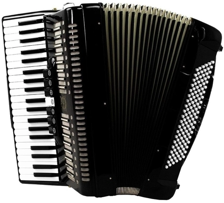 Acordeon 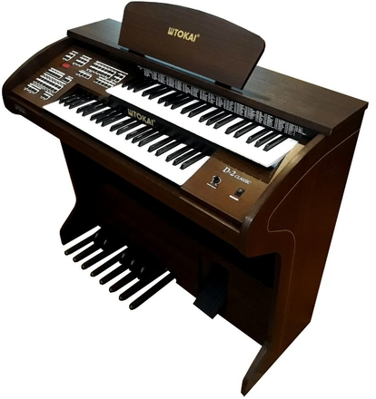 Orgão